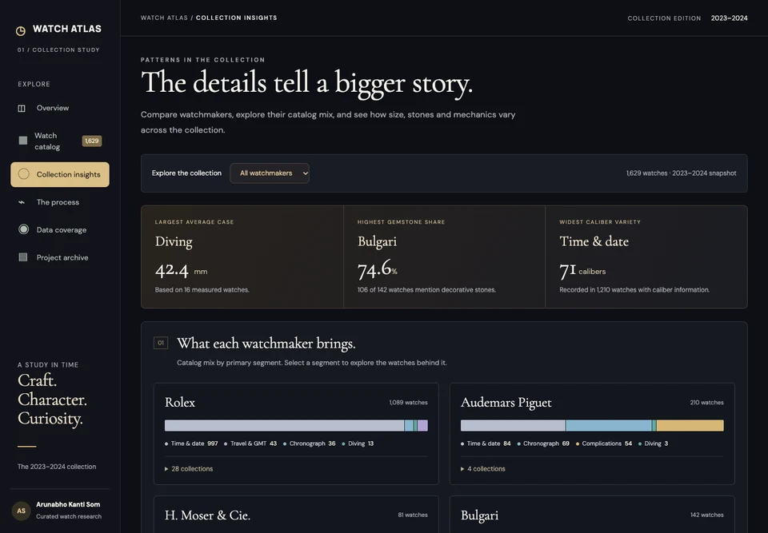
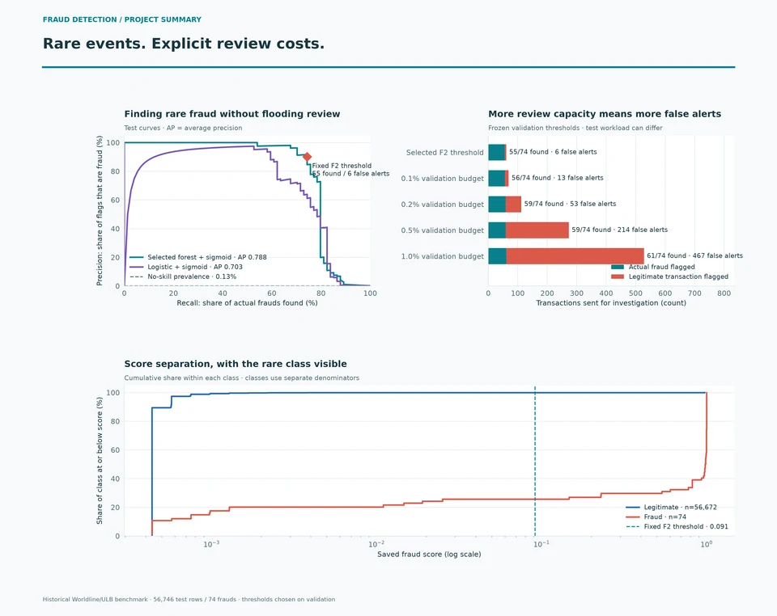
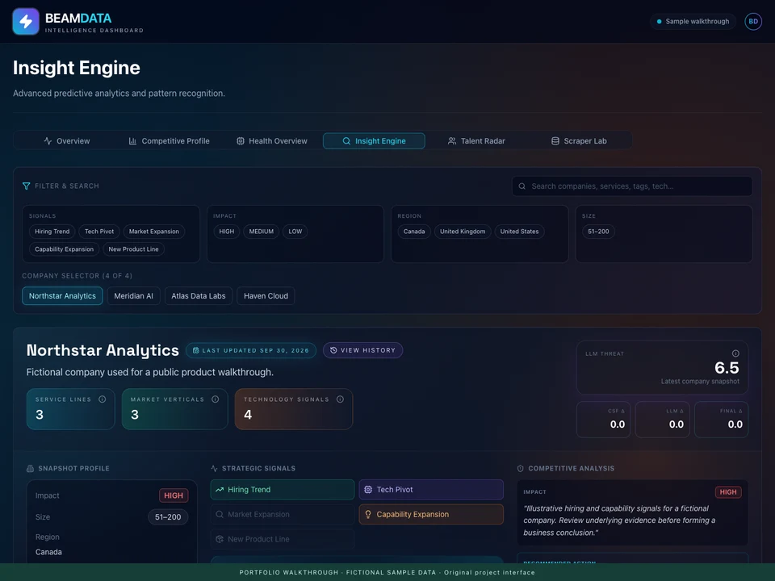

A collection.
A thousand
connections.
Watch Atlas turns 1,629 watch references into a visual way to explore the details that make a collection distinct.
Explore Watch Atlas
ARUNABHO KANTI SOM · TORONTO
I build the bridge between data
and the people who need to use it.
A practical mind.
A curious approach.
For teams making better decisions.
For people building what comes next.
09projects.
different questions.
5+years across data,
business & AI.
01 / THE WORK, IN MOTION
Move from the idea to the interface.
Then look under the surface.
Watch Atlas turns 1,629 watch references into a visual way to explore the details that make a collection distinct.
Explore Watch Atlas
Fraud detection is more than a score. The review explorer makes captured fraud, false alerts and investigation capacity visible together.
Explore fraud detection
An intelligence workspace connects company research, hiring patterns and automation. Explore the product through a clearly labelled sample.
Explore the intelligence workspace
02 / THE PROJECT COLLECTION
The thinking. The process. The output.
Every project has a story to explore.
Open a case study, or try the work yourself.
Preparing the project collection…
03 / CURIOSITY, ENCOURAGED
A different budget. A different player.
A different perspective.
Move a control. Watch the answer change.
Preparing the interactive output…
↳ Real public apps, recorded benchmarks and labelled samples. Each experiment explains its source.
04 / THE PERSON BEHIND THE PROCESS
Competitor monitoring, RAG pipelines, n8n automation, AI agents and predictive pricing models. Business dashboards connect inventory, sales and profitability with the decisions teams make.
SQL reporting, KPI dashboards, validation workflows and service trend analysis for a federal contact-centre network. Supported workload planning and program improvement with controlled access and audit traceability.
Python and SQL analysis of claims, transactions and seasonal patterns. Customer segmentation models and Tableau dashboards for financial KPIs, customer behaviour and sentiment.
Analysed 18,000+ member profiles in SQL and Excel. Explored claim patterns, premiums and risk to support underwriting, profitability and financial planning.
MASc · Risk EngineeringMemorial University of Newfoundland
Data Science & Big DataWeCloudData Academy
BTech · Electronics EngineeringWest Bengal University of Technology
05 / STILL BUILDING
Showing reviewed source versions
Public activity refreshes every 10 minutes while this page is open. Project outputs remain tied to their reviewed source version.
A GOOD QUESTION IS A GOOD START.
Building a team? Solving a data problem?
I’d like to hear what you have in mind.